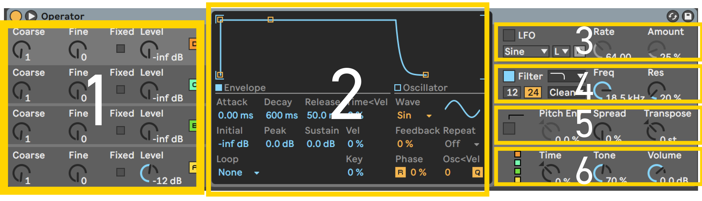

Operatorについて
Operatorは一般的な減算式のアナログシンセサイザーの仕組みとFMシンセサイザーの仕組みを組み合わせたシンセサイザーです。
FMシンセとしてだけではなく、通常のアナログシンセサイザーのようにも利用できます。このページでは最初につまずきやすい点を説明しています。
目次
各セクションの名称
減算式のアナログシンセサイザーとして利用
基本の波形について
Mono/Polyの切り替え
フィルターにエンベロープを適用する
Detune効果を適用する
-各セクションの名称

各セクションを選択することでより詳細なパラメーターが表示され変更が可能になります
1.オシレーターセクション
2.選択中のセクションの詳細が表示されます
3.LFOセクション
4.フィルターセクション
5.ピッチセクション
6.グローバルセクション
-減算式のアナログシンセサイザーとして利用
一般的なアナログシンセサイザーの仕組みで利用するにはA~Cまでのオシレーターを並列にします Operator右下のグローバルセクションを選択し一番右の横にオシレーターが並んだ図を選択します
-基本の波形について
-Mono/Polyの切り替え
Mono/Polyを切り替える際にはグローバルセクションのVoicesの数字を切り替えることで変更できます。選んだ数字までの
音が同時に出力されるようになり、Voicesを1にするとMonoになります。Monoの際はPitchセクションのGlideを適用することでMonoシンセで
用いられることの多い滑らかに音をつなぐ機能が利用できます。
-フィルターにエンベロープを適用する
-Detune効果を適用する